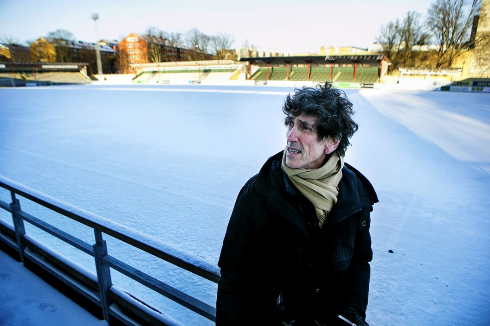
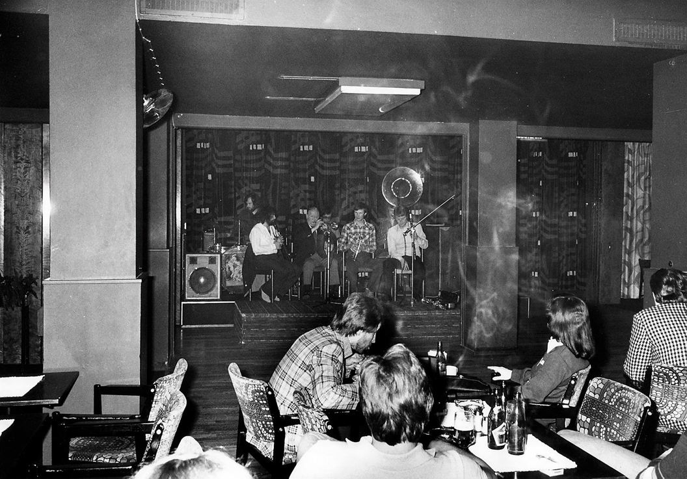
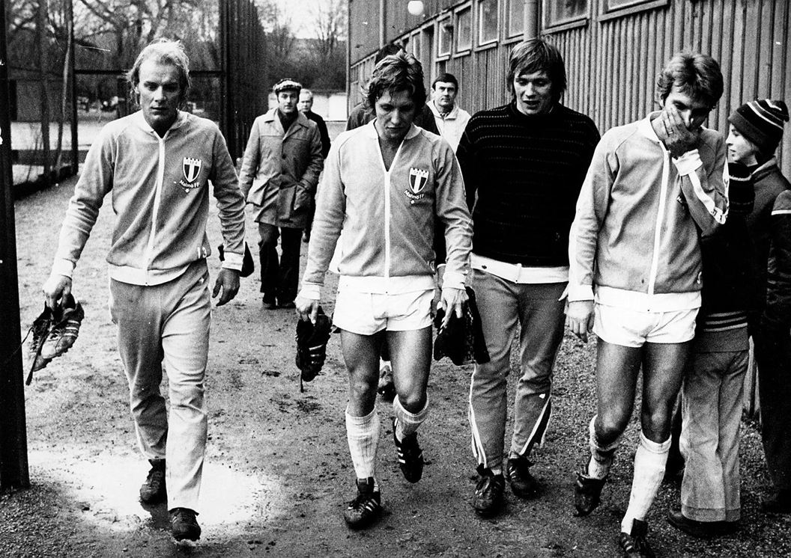
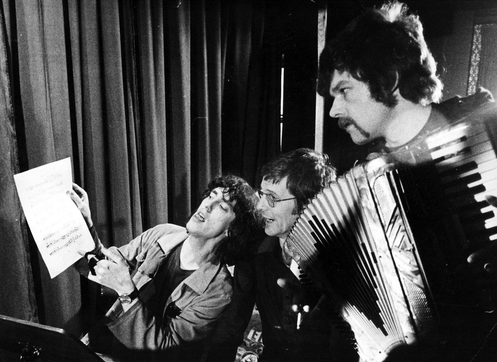
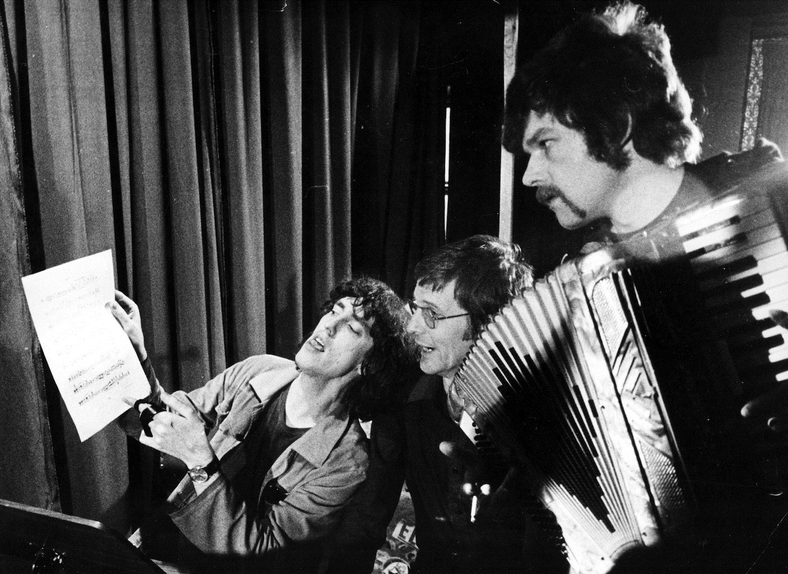
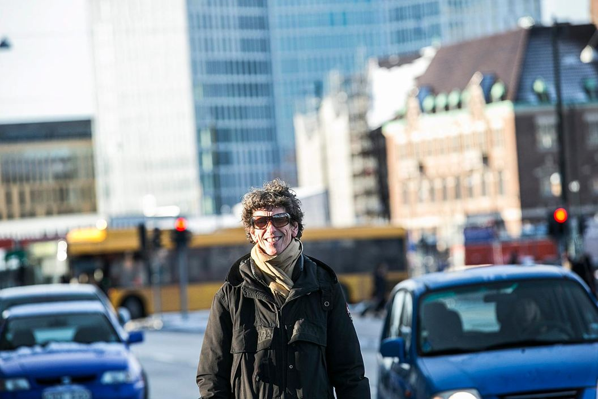
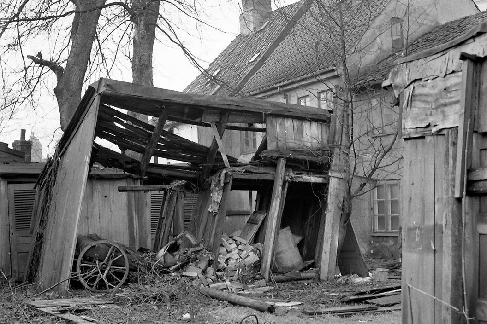
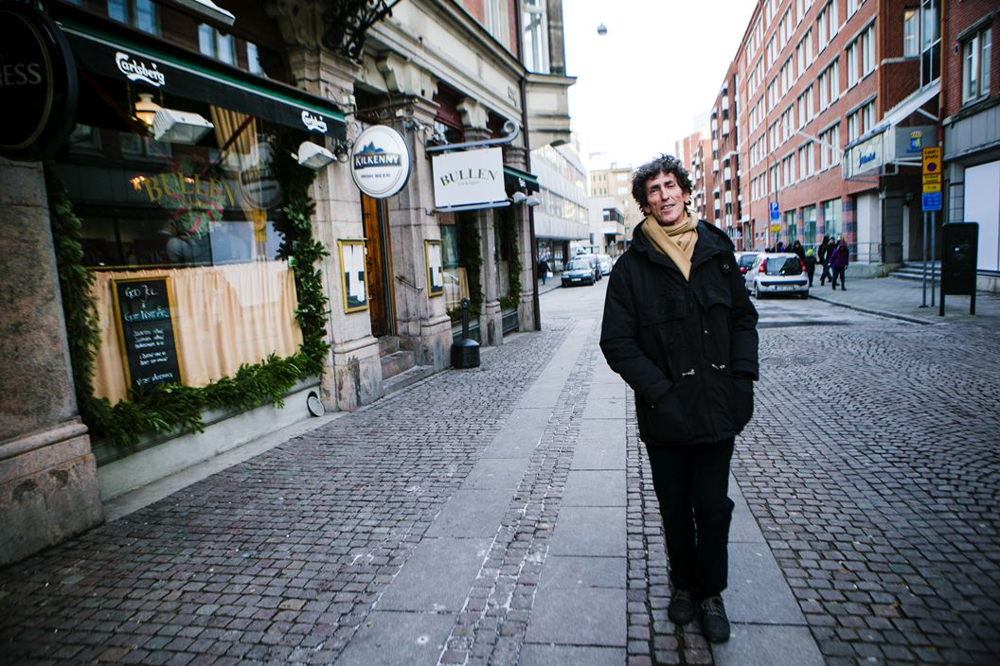

En hemstad i staden
Text Per Svensson
Nej, han gillar inte att blicka bakåt, och han tycker att Malmö är mediokert fast på ett bra sätt. Den stad han har återvänt till är samtidigt en annan än den han lämnade. Följ med Jacques Werup och Per Svensson på promenad genom Hemstaden.
"Adu, gå på fotboll i en sån rockajävul". Gamla Idrottsplatsen.
Bild: Moa Dahlin
Jacques matt? Nej, visserligen fyller han 70 nu på onsdag, den 14 januari. Men fortfarande är han en ung man med konstnärliga ambitioner.
I hela sitt liv har Jacques Werup gjort allt möjligt: spelat jazz, sjungit in skivor, författat romaner, framträtt som kabaréartist, skrivit manus, givit ut diktsamlingar. Man kan tycka att en annalkande 70-årsdag skulle vara en given förevändning för en summering. Men ...
– Du pratar med en man som ogillar retrospektiver. Jag blir sorgsen av sammanfattningar av konstnärsgärningar, säger han och berättar om ett möte med den en gång så uppburne litteraturmogulen Artur Lundkvist:
– Han satt vid sitt skrivbord med någon meter egna böcker. Så drog han med fingret över ryggarna och sa "ja, vad skulle det tjäna till?".
Efter fyrtio år eller så i landsbygdsexil – Österlen, Ystad, Paris – har Jacques Werup återvänt till hemstaden. Det har skett i all diskretion, utan pompa och välkomstfanfarer. Men han har under det gångna året påfallande ofta iakttagits på stadens gator, torg och fotbollsarenor. Efter att först ha bott vid Davidshallstorg har Werup just flyttat till Västra Rönneholmsvägen.
Det Malmö han nu lever i är ett helt annat Malmö än den stad han lämnade. Men ändå inte. Hur illa Jacques Werup än tycker om retrospektiver så är det ofrånkomligt att man alltid bär sitt förflutna med sig, som ett handbagage man inte kan ställa ifrån sig. En stad består inte bara av gator och hus utan också av minnen och myter. Att bli äldre är, kan man hävda, att bli sitt eget livs arkeolog.
En av julens kallaste dagar tar vi med oss Jacques Werup på en promenad genom hans livs Malmö. Liksom för att markera sin distans till rollen som stadens förlorade, men återvunne, son bär Werup solglasögon. Det är inte malmöitiskt. Solen ska inte skina i Malmö. I Malmö ska det regna och blåsa.
Den här gatan kunde ligga i vilken medioker europeisk stad som helst.
Vi börjar promenaden vid Triangelnstationens norra uppgång. Där finns en blodcentral. Förr i tiden var det en jazz- och rockklubb: Pilgården.
– En livlig lokal med mycket av nattens svärta, säger Jacques.
Jazz- och rockklubben Pilgården låg där blodcentralen nu ligger, vid Station Triangeln.

Bild: Lasse Svensson (Arkiv)
Gamla IP, januari 1975. MFF:s Tore Cervin, Conny Andersson och Tommy Larsson traskar mot omklädningsrummet efter en match mot Landskrona Bois.
Bild: Jan Carlsson (Arkiv)
På andra sidan Pildammsvägen slinker vi in på Malmö IP, platsen för en klassisk Werup-dribbling, scenen där en MFF-supporter kväser en kaxig Helsingborgare genom att fnysa:
"Adu, gå po match i en sån rockajävul".
Jacques Werup gav ut "Hemstaden" 1981. En Malmölegend var därmed född, eller i alla fall formulerad på ett liksom slutgiltigt, definitivt sätt: legenden om stan som aldrig låter sig imponeras av spanskflabbade finesser eller helsingborgska snobberier.
I själva verket har Werups förhållande till hemstaden dock alltid präglats av ambivalens. Tristess, konformism, grått i grått. Det har också varit hans Malmö. "I Malmö en söndagsförmiddag, en vanlig blåsig söndag i november eller mars, friläggs under några fasansfulla timmar den andra sidan av invånarnas fina, en aning arroganta motvilja mot att bli imponerade: intoleransen", heter det i "Hemstaden". Bakelsekartongernas, kepsarnas och persianpälsarnas söndagsmalmö beskrivs som"en av Helvetets förgårdar".
Nu står vi på Kastellgatan.
– Den här gatan kunde ligga i vilken medioker europeisk stad som helst, säger Jacques.
Tycker du fortfarande att Malmö är en medioker stad?
– Ja, på ett underbart sätt. Välgörande mediokert, sett ur ett större perspektiv. Och jag tycker inte det är tråkigt, det är fint.
Så utvecklar han ett resonemang om mixen mellan stillheten, öppenheten och det kosmopolitiska. Här på Kastellgatan skrev Werup diktsamlingen "Tiden i Malmö, på jorden".
 Bild: Moa Dahlin
Bild: Moa Dahlin
Här på Kastellgatan bodde Werup som ung man. Det var här han skrev diktsamlingen "Tiden i Malmö, på jorden" som gavs ut 1974 (och kom i nyutgåva för några år sedan): "Skrivandet är en privatsak/ om något som aldrig kan förbli/bara en privatsak/alltså skriver jag Kastellgatan 8/men menar Världen", slog han fast.
När nyutgåvan kom skrev min kollega Östen Rosvall en fin recension där han vittnade om hur mycket dessa dikter betydde för honom när han första gången läste dem, som vilsen 19-årig gymnasist i "självbelåtenhetens och enfaldens" Malmö: "Kärleken, fotbollen, politiken, litteraturen, berusningen, sinnligheten, rädslan, sjukdomen, döden, otillräckligheten, förvirringen - Werup gav det röst, en bred malmöitisk röst som gjorde min vilsenhet vardaglig, förvandlade den till ett existentiellt tillstånd. För första gången förstod jag att poesi också kunde vara något för mig."
Jacques Werup har i dagarna givit ut sin fyrtiofjärde bok (om han själv har räknat rätt). Titeln: "Du har funnits här. Poesi på liv och död". Det är en personlig hybridbok, en syntes av essä och antologi. Werup har valt dikter av några av sina favoritpoeter och väver in dem i en betraktelse över poesins väsen och natur. Han berättar att det var en annan av mina kollegor, filmskribenten Mattias Oscarsson, som inspirerade honom till att skriva boken. Genom att under en intervju fråga "vad är poesi?" och "varför blir man poet?"
Och det är väl poet du är, egentligen, säger jag.
– Framförallt är det vad jag skulle vilja bli, svarar Jacques.
Davidshallstorg, Malmös lattelagun, måndagsmyser. Själva försöker vi glömma hur intensivt vi fryser. Werup säger att han hört att polishuset ska bli hotell. Sedan pekar han på en hörnfastighet och minns att där har det funnits ett Systembolag där skådespelaren Michael Segerström jobbade extra.
Ett stenkast därifrån, på Davidshallsgatan, huserade 60- och 70-talets malmöitiska bohemkrog "Hungaria" med ett något mer robust utbud av eldande drycker.
– Han samlade ihop vinskvättar och sålde det som "konstnärvin".
"Han" var den ungerske krögaren Zoltan, en av Malmös många mytologiska gestalter. Den krog han drev tycks nu vara förvandlad till tvättstuga, vilket inte fullt ut rimmar med den utbredda föreställningen om dagens Malmö som så mycket mer spännande än gårdagens. Zoltans krog hade liberala öppettider.
Davidshallsgatan/Storgatan. Torbjörn Carlsons klassiska bild från 1972. SM för polishundar arrangeras i Malmö. I bakgrunden syns skylten för Restaurang Hungaria, i folkmun "Zoltans".
Bild: Torbjörn Carlson (Arkiv)
– På kvällarna tog han farväl av oss i pyjamas. "Tack för i afton, välkomna i morgon". Han bodde här på krogen. Det fick han väl inte, men det gjorde han. Ett tag skröt han med att han hade personal. Man frågade vad som fanns att äta. "Jag ska fråga i köket", sa han och så gick han ut och skramlade lite med kastrullerna och serverade sen den gulasch han själv lagat.
Kabaré Fredagsbarnen: Jacques Werup, Lasse Söderberg och Rolf Sersam i maj 1975.

– Framförallt är det vad jag skulle vilja bli, svarar Jacques.
Davidshallstorg, Malmös lattelagun, måndagsmyser. Själva försöker vi glömma hur intensivt vi fryser. Werup säger att han hört att polishuset ska bli hotell. Sedan pekar han på en hörnfastighet och minns att där har det funnits ett Systembolag där skådespelaren Michael Segerström jobbade extra.
Ett stenkast därifrån, på Davidshallsgatan, huserade 60- och 70-talets malmöitiska bohemkrog "Hungaria" med ett något mer robust utbud av eldande drycker.
– Han samlade ihop vinskvättar och sålde det som "konstnärvin".
"Han" var den ungerske krögaren Zoltan, en av Malmös många mytologiska gestalter. Den krog han drev tycks nu vara förvandlad till tvättstuga, vilket inte fullt ut rimmar med den utbredda föreställningen om dagens Malmö som så mycket mer spännande än gårdagens. Zoltans krog hade liberala öppettider.
Davidshallsgatan/Storgatan. Torbjörn Carlsons klassiska bild från 1972. SM för polishundar arrangeras i Malmö. I bakgrunden syns skylten för Restaurang Hungaria, i folkmun "Zoltans".
Bild: Torbjörn Carlson (Arkiv)– På kvällarna tog han farväl av oss i pyjamas. "Tack för i afton, välkomna i morgon". Han bodde här på krogen. Det fick han väl inte, men det gjorde han. Ett tag skröt han med att han hade personal. Man frågade vad som fanns att äta. "Jag ska fråga i köket", sa han och så gick han ut och skramlade lite med kastrullerna och serverade sen den gulasch han själv lagat.
Kabaré Fredagsbarnen: Jacques Werup, Lasse Söderberg och Rolf Sersam i maj 1975.

Bild: Göran Strandberg 1975
Det var hos Zoltan Jacques Werup lärde känna den något äldre och mer världsvane poeten Lasse Söderberg. Tillsammans drev de kabarén Fredagsbarnen i tio år. Ny föreställning i lokalen på Regementsgatan 4 varje fredag (under säsong). Vi går förstås dit. Jacques minns de långa ringlande köerna som kunde iakttas från den kinessylta tvärsöver kanalen där kabaretdirektörerna och deras gäster brukade "värma upp".
– Ska vi värma oss? föreslår Jacques.
Kylan har nu trängt upp genom sulorna och liksom bildat ett andra, eller nytt, skelett. En värmepaus framstår som en god idé. Den tas på Solde kaffebar. Jacques vill ha te. Det finns inte. Det blir varm äpplemust istället.
Te? På en kaffebar? Bäddar för ytterligare en klassisk replik hämtad från "Hemstaden", också den på sin tid tolkad som ett exempel på den robusta malmömentaliteten. Den unge Werup är "bjuden hem till en fager dam på Lönngatan". Hon vill bjuda på kaffe. Jacques vill hellre ha te. "Kinesapiss! E du sjuk?! frågade hon".
Raskt korsar vi Malmö City. Det är ju inte stort. Det har heller aldrig spelat någon större roll i den werupska hemstaden, möjligen då som en opersonlighetens p-plats, i kontrast till fläckarna av liv i de mer perifera kvarteren.
Hur mycket kan en stad förändras, och ändå i någon mening förbli sig lik? Få svenska städer lämpar sig bättre för filosoferanden kring den frågan än just Malmö. Det är en stad som förblir sig lik genom att oupphörligt förändras.
Se där, ett å..två å..tre torn har skjutit upp nere vid hamnbassängerna. Det är Malmö live. Lite nödbedd poserar Jacques med de nya höghusen i bakgrunden. Om husen representerar det nya kaxiga Malmö, vad är det då meningen att han ska representera? Stadsromantikens oldboy?
Bild: Moa Dahlin
I ett fönster på Hotell Norvalla-huset på Norra Vallgatan sitter en nyfiken katt. Hotellet var politikern Pierre Schoris barndomshem. I en sunkig kvart i en av grannkåkarna var Jacques Werup en gång på eftersläckning efter en jazzspelning. Det var i slutet av 60-talet. Kvarten tillhörde Johnny Bode, före detta operettcharmör, svindlare och upphovsman till en på sin tid legendarisk svit snusksånger,
"Bordellmammans visor". Jazzklarinettisten Gunnar Siljabloo Nilson var också där, tyst och dödligt berusad. Så dök en svart amerikansk jazzmusiker upp. Han hade spelat i Malmö samma kväll. Nu var han ute på dåligheter och hade därför letat sig hem till Bode, som genast skickade musikerns taxi några hundra meter neråt gatan, till hotell Savoy, med uppdrag att hämta champagne. Sådan var han, Bode. Han sjöng en pornografisk och rasistisk visa. Amerikanen skrattade och slog sönder en gitarr.
Han hette Jimi Hendrix.
– Jag hade ingen aning om vem det var. Men Bode var ju en sån som lyfte telefonen och ringde Frank Sinatra, säger Jacques, som berättat anekdoten i en av sina sena självbiografiska böcker, "Medan jag levde".
Hur ska man förstå detta "levde", ett pågående liv i imperfekt?
En annan av Werups lite rapsodiska memoarböcker, "Levande tillsammans" har en liten dialog som motto:
– Vem imiterar du?
– Mig själv, förfärande nog.
Att vara äkta i ögonblicket är ett överordnat moraliskt värde i Jacques Werups konstnärskap. Det är jazzens ethos. Man spelar inte efter andras noter. Man är sann mot sig själv och livet.
Bär man på en så krävande moralisk börda blir man paradoxalt lätt också nostalgiker. Minnen är ju på sätt och viss alltid autentiska. Man minns det man minns.
En gir tillbaka in i stan, Adelgatan/Östergatan. Åt ena hållet Sturehof, den klassiska krogen där den sofistikerade ynglingen brukade sippa Gröna hissen (gin, grön curacao, pommac). Åt andra hållet barndomshemmet på Östergatan, den stora lägenheten högst upp i patricierhuset vid Drottningtorget. På nedre botten hade Jacques pappa sin matthandel. Han hade gift sig med dottern till den invandrade judiske matthandlaren Jean Nessim. Jacques Werup har använt sin morfar som förebild för titelpersonen i romanen "Shimonoffs längtan".
Ja, det är klart att det brådskar. Det känner man ju. Och det är ju så att de flesta dikter handlar i någon mening om döden. Jag tror inte du kan hitta en enda bra dikt som inte i förlängningen handlar om tidens begränsade räckvidd.
Jacques Werup växte upp på en borgerlig glänta i en vidsträckt labyrintisk slumskog. I "Levande tillsammans" beskriver han målande den kåkstad han som barn varje dag traskade genom på väg till och från Österportskolan.
"I de små låga husen vimlar det av folk, en hel familj i varje rum. Varmvatten och värmeledningar är det inte tal om, ännu mindre om kylskåp och badkar. Det osar om kolkaminerna, hästar drar flakvagnarna i gränderna. Tattare och luffare och horor i kyffena."
Det är misär. Det är "ett slags kvardröjande 1800-tal". Men för barnet, och kanske även den åldrande mannen, också ett äventyrsland.
– Barnet är klasslöst. Jag hade så många vänner i de där kåkarna, säger Jacques medan vi snabbt tar oss igenom de moderna, och livlösa kvarter som ersatt den kalhuggna slumskogen.
Drottningtorget. Slummen i Malmö. Bakgård i kvarteret Betlehelm i Malmö 1957. Under 60- och 70-talen revs stora delar av området.

Bild: Arkiv
Han vet förstås att han här är ute på farlig mark, i kärleken till det sneda och vinda och osiga, de försvunna butikerna, de små verkstäderna ingen längre minns. Man hör redan de indignerade ropen: Borgerlig romantisering av klassamhället!
Men han har en poäng med stark samtidsrelevans: fortfarande är Malmö en stad där de rika och de fattiga lever om inte sida vid sida så i alla fall rygg mot rygg, till skillnad från exempelvis Stockholm med dess säkerhetszoner av tallskog mellan innerstaden och förorterna. Det gör Malmö till den i fysiskt avseende kanske minst segregerade staden i Sverige.
Tänderna skallrar. Händerna stelnar. Vi skyndar på stegen, över Paulibron och upp på Kungsgatan, förbi skolfiket Jojes Kondis (numera Café Element) och Latinskolan, där Jacques vistades när han inte satt på Jojes eller Sture eller repeterade med något jazzband. Om Lugnet, på andra sidan Amiralsgatan, har det mesta sagts. Nu återstår bara att sörja i tysthet.
I hörnet av Kaptensgatan pekar Jacques på jourbutiken och berättar att lokalen också hyst en av stans bästa charkuterister.
Storgatan. Utanför stamkrogen Bullen (Två krögare).
Bild: Moa Dahlin
Nu har vi nått målet, stamkrogen Bullen. Även här kan man iaktta ett Malmö i förändring. Man anar ett kommande generationsskifte. Man tycker sig skymta enstaka hipsterskägg. Man hör barnröster.
Matsedeln är sig dock lik. Werup beställer wienerschnitzel.
Nu måste jag ändå ställa någon fråga om 70-årsdagen.
– Fylla år? Det tar jag ingen notis om. Det är totalt likgiltigt för mig, hävdar han. Så då talar vi om litteratur istället, och om döden.
– Poesin är på liv och död nu. Det är brådskande, och då kan man inte bara ägna sig åt att tänka på priser eller på hur man ska upprätthålla sitt rykte.
Sa du brådskande?
– Ja, det är klart att det brådskar. Det känner man ju. Och det är ju så att de flesta dikter handlar i någon mening om döden. Jag tror inte du kan hitta en enda bra dikt som inte i förlängningen handlar om tidens begränsade räckvidd.
Upprör döden dig?
– Nej, man vänjer sig.
Så vinkar vi adjö ute på Södra Förstadsgatan. Vad bär vi med oss? Kanske en av Jacques Werups bästa boktitlar: "Livet går fort, timmarna sakta".
Werup i årtal
14 januari 1945: Föds i Malmö.
1964: Tar studenten vid Latinskolan i Malmö. Gör lumpen i Halmstad. Upptäcker poesin i regementsbiblioteket.
1971: Debuterar med romanen ”Returbiljett Polen”.
1972: Skriver manus till tv-serien ”NP. Möller, fastighetsskötare”. Var med om att starta Cabaret Fredagsbarnen.
1979: Ger ut pikareskromanen ”Casanovas senare resor”.
1980: ”48 dikter från Österlen”.
1991: Skivan ”Provinsens ljus”.
1993: Sydsvenskans kulturpris.
2001. Manus till filmen ”Så vit som en snö”.
2004: Tillsammans med Lill Lindfors: albumet ”Gör mig lite levande”.
2005: ”Hundra dikter”, ett urval han är stolt över.
2006: Samfundet De nios stora pris.
Uppbrott
När vi tar avsked.
för tusende gången
läser vi på läpparnas hud
de finstilta förteckningarna
över varandras stöldgods.
Orden fraktas bort
likt de nedsuttna
möblerna på flaket.
Det blir allt mer
patetiskt, flyttlasset
och gravallvaret,
ju närmare byn det kommer.
Kring stationhuset
står traktens ynglingar,
pekande och flinande,
och rusar sina mopeder.
Från: 48 dikter från Österlen Jaques Werup